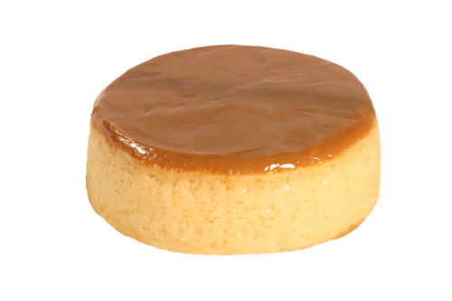

FLAN NAPOLITANO
PROCEDIMIENTO
1.-Fundir 200 gr de azúcar hasta lograr un caramelo, vaciar en moldes y dejar enfriar.
2.-Licuar todos los ingredientes arriba mencionados.
3.-Agregar el contenido al molde donde se realizó el caramelo, cubrir el molde con papel aluminio.
4.-Colocar el molde en un recipiente con agua para formar un baño maría.
5.-Llevar al horno durante 40 minutos aproximadamente a 180º C.
6.-Pasado este tiempo desmoldar volteándolo en una charola.

| CANTIDAD |
INGREDIENTES |
| 1 LATA |
LECHE CONDENSADA |
| 1 LATA |
LECHE EVAPORADA |
| 6 PZAS |
HUEVO |
| 15 ML |
VAINILLA |
| 1 RAJA |
CANELA |
| 150 G |
FRESAS |
| 200 G |
AZUCAR REFINADA |
| 1 METRO |
PAPEL ALUMINIO |